動いている壁に弾性衝突するボールの運動
𝒙𝑡
を計算したい。時間とともに変形するような壁も含む。
弾性衝突公式が変わる以外は前章と同じ
前章との違いは、壁が動いているという点のみなので、弾性衝突公式（＝弾性衝突の前後での速度変化を与える公式）がどう変わるかを考えればよい。それ以外の計算手順は、前章と同じである。
壁とともに動く観測者を考えるのが良さそう
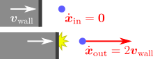
まず、簡単な例として、右図のように静止しているボール（
˙𝒙in=𝟎
）を考え、これに、速度
𝒗wall
を持つ壁がぶつかってくる場合を考える。
弾性衝突条件が推測できる（簡単な場合）：式(1)
この場合は、弾性衝突条件が推測できる。即ち、衝突後のボールの速度
˙𝒙out
は、壁面の速度
𝒗wall
の2倍になる：
˙𝒙out=2𝒗wall(1)
これは、実験で検証することも容易である。逆に、ゼロ弾性衝突（＝全く跳ね返らないような衝突）の場合には、壁に接触したままになるので
˙𝒙out=𝒗wall
となる。
前章の弾性衝突条件は、使えない
このように、壁が動いている場合、たとえ弾性衝突であっても、衝突の前後で速度の大きさが変化する。よって、前章で述べた弾性衝突条件
|˙𝒙out|=|˙𝒙in|
はそのままでは成立しない。
壁とともに動く観測者を考えれば良さそう
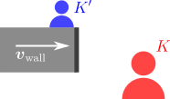
しかし、この結果が使えるようにする方法がある。それは、壁とともに動いている観測者
𝐾′
を考えることである（右図）。
𝐾′
から見れば、壁は静止しているので、前章の結果が使えるというわけである。詳しくは後述するが、このように観測者を取り換える手法がうまくいくことを相対性原理という。
この章の方針
よって、弾性衝突公式を求めるには、「
𝐾′
で成り立つこれまで通りの弾性衝突公式」を元の観測者
𝐾
から見たものに座標変換する、という戦略が取れそうである。ただし、目的の弾性衝突公式には、壁面の速度
𝒗wall
が現れるはずなので、
𝒗wall
を（壁の形状を表す拘束条件
𝐺(𝑡,𝒙)≥0
から）導く公式も必要となる。これらを踏まえてこの章では、以下の3つの節に分けて議論を行う：5.1相対性原理による弾性衝突公式の導出5.2壁面の速度 𝒗wall の導出5.3ボールの運動 𝒙𝑡 の計算
5.1相対性原理による弾性衝突公式の導出
この節では、壁とともに移動する観測者
𝐾′
を経由することで、弾性衝突の公式(13)を求める。
5.1.1壁とともに動く観測者 𝐾′ から見た衝突の公式：式(2)
冒頭でも述べた様に、まず着目するのは本来の観測者
𝐾
から見て動いている壁であっても、壁面の速度
𝒗wall
と同じ速度で動いている別の観測者
𝐾′
からは、壁は静止して見えるという事実である（右図）。
𝐾′
から見れば、壁面は静止しているので、前章の結果が使えるだろう。これを、相対性原理という（以下の【5.1-注1】）。
𝐾′ から見た弾性衝突公式：式(2)
これにより、
𝐾′
から見たボールの運動は、前章の結果をそのまま使って計算できる。即ち、反射速度
˙𝒙′out
は、以下の弾性衝突公式で与えられる：
˙𝒙′out=[1−2ˆ∇′𝐺′(ˆ∇′𝐺′)T]˙𝒙′in(2)
「
′
」がついた量は、
𝐾′
から見た量であることを表す（微分ではない）。よって、この式を、元の観測者
𝐾
から見たものへ変換してやれば、目的の弾性衝突公式が得られることになる。
𝐾′ が加速度を持っている場合でも、式(2)は成り立つ
ただし、
𝒗wall
が一定でない場合（＝壁が加速度運動している場合）、壁面上の観測者も加速度を持つことになるので、相対性原理は成り立たない。しかしその場合でも、「衝突の瞬間の短い時間間隔において衝突点での壁面が静止して見える」ような等速度の観測者は、常に存在する。この観測者を
𝐾′
とすれば、やはり、式(2)が成り立つ。要するに、衝突した際のボールの速度変化は、壁面の速度の影響は受けるが、壁面の加速度とは無関係ということである。これを見るには、上下に振動する床にボールを当てる場面を考えると分かりやすい。上昇しきった／下降しきった瞬間は、床に加速度は生じているが、速度はゼロである。その瞬間に床に衝突したボールの弾み方は、床が静止し続けている場合と同じであり、加速度には影響されない。
【5.1-注1】相対性原理
慣性系
物体の運動がニュートンの運動方程式
𝑚¨𝒙=𝒇
で記述できるような観測者を、慣性系という。慣性系では、力
𝒇
を受けていない物体は、ある一定の速度ベクトルを保つように観測される。慣性系とは、要するに、「加速も回転もしていない」観測者のことである[1]。
相対性原理
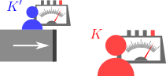
慣性系に関して、以下の直感的にももっともらしい性質が成立することを、相対性原理という：
慣性系同士の関係性
ある観測者
𝐾
が慣性系であれば、
𝐾
に対して一定の速度ベクトルを持ち、かつ、自転していない観測者
𝐾′
も慣性系である。
物理法則の等価性
全ての慣性系において、物理法則は全く同じである。即ち、右上図のように、ある慣性系
𝐾
においてある実験装置（計器の図が装置全体を表している）を作動させた結果と、その装置を丸ごと別の慣性系
𝐾′
に持って行って作動させた結果は等しい。日常的に言えば、乗り心地の良い電車の中で目を閉じている時、電車が止まっているか／等速度で動いているかは判別できないということである（自分自身が実験装置になっている）。
補足
[1] 非慣性系
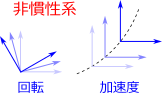
今まで気にしてこなかったが、逆に、非慣性系（＝ニュートンの運動方程式がそのままでは成り立たない系）も存在する。これは右図のように、観測者自身が自転・加速度運動している場合である。非慣性系では、力が働いていない物体であっても加速度を持っているように見える。例えば、地球は自転しているので、地上の観測者は厳密には非慣性系である。そのため、力を受けていないはずの夜空の星が、24時間かけて地球の周りを1周しているように見える（円運動には加速度が必要）。とはいえ、キャッチボールのように短時間で終わる実験では地球の自転の影響は無視できる。
参考相対性原理の検証
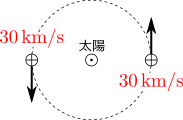
相対性原理を検証するための1つの方法として、日時を変えて同じ実験を繰り返すことが考えられる。地球の自転により、地球上の同一地点であっても昼と夜では約
900m/s
の相対速度が生じる（赤道上の場合）。また地球の公転により、夏と冬では約
60km/s
の相対速度が生じる（右図）。従って、もし相対性原理が破れていれば、時刻や季節によって実験の結果が異なるはずである。しかし、そのような結果は観測されていない。
5.1.2速度 ˙𝒙′ の変換則
壁とともに動いている観測者
𝐾′
から見た時の弾性衝突の公式(2)を、元の観測者
𝐾
での式（＝「
′
」がつかない式）に変換したい。そのためには、同式に現れる2種類の量
∇′𝐺′
と
˙𝒙′
の変換則が分かればよい。
速度 ˙𝒙′ の変換則：式(4)
まず、速度
˙𝒙′
の変換則である。座標
𝒙′
の変換則を考え、それを時間微分すればよい。
𝒙′,𝒙
の関係式は、
𝐾′
の移動速度が壁面の速度
𝒗wall
であることより、以下のようになる：（以下の【5.1-注2】のガリレイ変換(5)）
𝒙′=𝒙−𝑡𝒗wall(3)
速度
˙𝒙′
の変換則は、この両辺を時間微分すれば得られる：
˙𝒙′=˙𝒙−𝒗wall(4)
𝒗wall
の分だけ、相対速度が変化して見えるということである。これは直感的にも自然だろう。
【5.1-注2】ガリレイ変換：式(5)
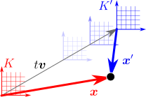
2つの慣性系
𝐾,𝐾′
を考える。右図のように、
𝐾′
は「
𝐾
から見て一定の速度
𝒗
で動いている」とする。
𝑡=0
において両者の座標系は一致するとする[1]。
ガリレイ変換
この時、
𝐾
から見たある点の座標を
𝒙
とし、同じ点を
𝐾′
から見た時の座標を
𝒙′
とする。すると、
𝒙
と
𝒙′
の間の関係式は、右図の3つのベクトル
𝒙,𝒙′,𝑡𝒗
が3角形を構成することから、以下のようになる：
𝒙′=𝒙−𝑡𝒗(5)
この座標変換をガリレイ変換という[2]。
補足
[1] 座標系の取り方
𝑡=0
で座標系を一致させるのは、単に、簡単のためである。一般的には、
𝑡=0
において原点が別々の場所にあってもよい。実際、
𝐾
から見た「
𝑡=0
での
𝐾′
の原点の位置」を
𝒙0
と置けば、式(5)は、
𝒙′=𝒙−𝑡𝒗−𝒙0
となる。だが、
𝒙0
をどこに取るかは任意なので、
𝒙0=𝟎
としておけば十分である。なお、軸の方向も、
𝐾,𝐾′
の間で定数角度だけ異なっていてもよいが、特に重要ではないので、一致するとしている。
[2] 相対性原理と整合する
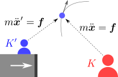
ガリレイ変換(5)は、上述の相対性原理【5.1-注1】と整合している。実際、相対性原理は
𝐾′
においてもニュートンの運動方程式が成り立つことを要求するが、右図のように、
𝐾
において
𝑚¨𝒙=𝒇
で表される運動を、
𝐾′
から見ると
𝑚𝑑2𝑑𝑡2𝒙′=𝑚𝑑2𝑑𝑡2(𝒙−𝑡𝒗)=𝑚¨𝒙=𝒇
となり、確かに、
𝐾′
でもニュートンの運動方程式
𝑚¨𝒙′=𝒇
が成り立っている。特に、力
𝒇
は、慣性系によらず同じ値になる。
5.1.3 ∇′𝐺′ の変換則：式(8)
後は、式(2)に含まれる
∇′𝐺′
を
∇𝐺
で表せばよい。とはいえ、計算しなくてもその答えは直感的に分かる。実際、壁の向きは、観測者の速度には依存しないはずなので、
∇′𝐺′∥∇𝐺
となりそうである。これを示そう。
拘束条件 𝐺′,𝐺 に時間を含める
まず、動いたり変形したりしている壁を考えているので、拘束条件
𝐺′,𝐺
の関数形は、時刻
𝑡
とともに変化することになる：
𝐺′(𝑡,𝒙′)≥0,𝐺(𝑡,𝒙)≥0(6)
例えば、水平な床が上下（
𝑧
軸方向）に振動しているような場合であれば、
𝐺(𝑡,𝒙)≡𝑧−𝑎sin𝑏𝑡
のようになる（
𝑎,𝑏
は定数）。
𝐺′
と
𝐺
の関係式を求め、それを空間微分すれば求める変換則が得られることになる。
𝐺′ と 𝐺 の関係式：式(7)
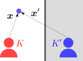
さて、ガリレイ変換(3)：（再掲）
𝒙′=𝒙−𝑡𝒗wall
の関係式を満たす任意の
𝒙,𝒙′
に対して、両者は観測者が異なるだけで空間上の同じ点を表しているので（右図）、式(6)の2式は、「両方とも成立する（＝壁の外にある）」か「両方とも成立しない（＝壁の中にある）」かのどちらかである。即ち、この
𝒙,𝒙′
について、
𝐺′(𝑡,𝒙′)
と
𝐺(𝑡,𝒙)
の符号は一致する。そのような
𝐺′(𝑡,𝒙′)
として、単純に
𝐺(𝑡,𝒙)
に一致するものを取ればよい：
𝐺′(𝑡,𝒙′)=𝐺(𝑡,𝒙)(7)
前章でも述べたように、拘束条件の関数形には任意性があるので、
𝐺
が与えられていても、
𝐺′
は一意的には決まらない。ここでは、正当な
𝐺′
として、最も自然な式(7)を採用したということである。
関係式(7)を微分 → 式(8)
後は、この関係式(7)を使えば、
∇′𝐺′
と
∇𝐺
の関係式が得られる（以下の【5.1-注3】を使う）：
(∇′𝐺′)T≡𝜕𝐺′(𝑡,𝒙′)𝜕𝒙′∣式(7)=𝜕𝐺(𝑡,𝒙)𝜕𝒙′∣
∣
∣
∣微分の連鎖律(10)を使って 𝒙 での微分にする=𝜕𝐺(𝑡,𝒙)𝜕𝒙𝜕𝒙𝜕𝒙′∣
∣
∣
∣
∣𝜕𝒙𝜕𝒙′=𝜕(𝒙′+𝑡𝒗wall)𝜕𝒙′=𝑑𝒙′𝑑𝒙′=1=(∇𝐺)T
よって、点
𝒙′
における
∇′𝐺′
と、それに対応する点
𝒙=𝒙′+𝑡𝒗wall
における
∇𝐺
は等しい：
∇′𝐺′=∇𝐺◼(8)
完全に一致したのは、式(7)となるように
𝐺′
を取ったからである。一般には大きさまでは一致しないが、式(2)に代入すれば正規化されるので、影響はない。
【5.1-注3】合成関数の微分公式（連鎖律）：式(9)
多変数関数
𝐺(𝒙)
を考える。
𝒙
が
𝒙′
の関数
𝒙(𝒙′)
になっている場合、
𝐺(𝒙)
は、
𝒙′
の関数とみなすこともできる：
𝐺(𝒙(𝒙′))
。よって、
𝒙′
での微分を考えることができる。この時、以下が成り立つ：
𝑑𝐺𝑑𝒙′=𝑑𝐺𝑑𝒙𝑑𝒙𝑑𝒙′(9)
あたかも分数の約分を行ったかのように見えるこの公式を、連鎖律という。
時間
𝑡
に依存する場合も同様
𝐺,𝒙
が
𝑡
にも依存する場合、即ち
𝐺(𝑡,𝒙),𝒙(𝑡,𝒙′)
となる場合であっても、
𝒙′,𝒙
での偏微分に置き換えれば、同じ式が成り立つ：
𝜕𝐺(𝑡,𝒙)𝜕𝒙′=𝜕𝐺𝜕𝒙𝜕𝒙𝜕𝒙′(10)
偏微分
𝜕𝐺𝜕𝒙′
は、
𝒙′
以外を定数とみなしたときの全微分に等しい。他の偏微分も同様である。
ベクトル値関数の場合も同様
関数がベクトル値
𝑮(𝒙)
の場合も、同様の式が成り立つ：
𝑑𝑮𝑑𝒙′=𝑑𝑮𝑑𝒙𝑑𝒙𝑑𝒙′(11)
導出
全微分
𝑑𝐺𝑑𝒙,𝑑𝒙𝑑𝒙′
の定義式は、1次近似を用いてそれぞれ以下のようになる（第4章の【4.2-注2】）：
𝛿𝐺≐𝑑𝐺𝑑𝒙𝛿𝒙,𝛿𝒙≐𝑑𝒙𝑑𝒙′𝛿𝒙′(12)
右式を左式に代入して
𝛿𝒙
を消去すると
𝛿𝐺≐𝑑𝐺𝑑𝒙𝑑𝒙𝑑𝒙′𝛿𝒙′
となる。緑字部分は、
𝑑𝐺𝑑𝒙′
の定義そのものである。よって、式(9)が成り立つ。
◼
式(11)の導出も、
𝐺
を
𝑮
に置き換えるだけで、全く同じである。
◼
式(10)についても、式(12)に相当する式：
𝛿𝐺≐𝜕𝐺𝜕𝑡𝛿𝑡+𝜕𝐺𝜕𝒙𝛿𝒙𝛿𝒙≐𝜕𝒙𝜕𝑡𝛿𝑡+𝜕𝒙𝜕𝒙′𝛿𝒙′
の第2式の
𝛿𝒙
を第1式に代入した後、
𝛿𝒙′
の係数を見れば導ける。
◼
5.1.4弾性衝突の公式：式(13) → 壁面の速度 𝒗wall を求めたい
以上により、
𝐾′
から見た衝突の公式(2)に、
˙𝒙′
と
∇′𝐺′
の変換則、それぞれ式(4)と式(8)を代入すれば、元の観測者
𝐾
から見た衝突後の速度
˙𝒙out
の公式が得られる：
˙𝒙out−𝒗wall=[1−2ˆ∇𝐺(ˆ∇𝐺)T](˙𝒙in−𝒗wall)(13)
この式を使うには、
𝒗wall
の値が必要である。壁面の形状は拘束条件
𝐺(𝑡,𝒙)
で定義されるのだから、
𝐺(𝑡,𝒙)
が与えられれば壁面の速度
𝒗wall
も決まる。その公式を次節で導く。
5.2壁面の速度 𝒗wall の導出
残る課題は、式(13)の未知数である壁面の速度
𝒗wall
を、拘束条件
𝐺(𝑡,𝒙)
から求めることである。この節では、
𝒗wall
を求め（＝式(17)）、最終的な弾性衝突公式(19)を導く。
5.2.1 𝒗wall は壁面に垂直：式(14)
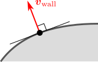
まず、右図のように、
𝒗wall
は、壁面に垂直であるとしてよい。というのも、前章と同様に、壁とボールの間に摩擦がないという理想的な状況を考えているので、壁面に沿った方向の壁の運動は、ボールの運動には影響しないので無視できるからである。そもそも、拘束条件を式(6)の形で壁を表した場合、これには、壁面と平行な方向の速度の情報が含まれていない。例えば、水平な床が水平方向に動いていても、見かけの壁の位置は変化しないので、
𝐺
は、壁が静止している場合と同じである。
𝒗wall は壁面に垂直：式(14)
前章の4.2.2節で述べたように、
𝐺
の微分
∇𝐺
は壁面に垂直である。従って、
𝒗wall
は、
∇𝐺
と平行である：
𝒗wall=𝜆ˆ∇𝐺(14)
未知数は、
𝒗wall
の大きさ
𝜆
だけである。
5.2.2壁面速度 𝒗wall ：式(17)
さて、壁面速度
𝒗wall
を決めるには、あと1つ、
𝒗wall
の大きさに関する条件があればよい。
𝛿𝑡 秒後の壁の位置を考えればよい
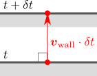
まず、時刻
𝑡
における壁面上の点
𝒙
は、
𝛿𝑡
秒後
𝛿𝒙≐𝒗wall⋅𝛿𝑡
だけ移動する（右図）。移動後の点
𝒙+𝛿𝒙
は壁面上に留まらなければならないので、拘束条件
𝐺(𝑡+𝛿𝑡,𝒙+𝛿𝒙)=0(15)
を満たす。これが、壁面の速度
𝒗wall
の大きさに関する条件を与える。
𝒗wall
が大きすぎても小さすぎても、壁面からずれてしまう。
式(15)を1次近似 → 壁面速度の条件式(16)
上式(15)を1次近似すると、以下のようになる：
0=𝐺(𝑡+𝛿𝑡,𝒙+𝛿𝒙)∣1次近似（以下の【5.2-注1】）≐𝐺+𝜕𝐺𝜕𝑡𝛿𝑡+𝜕𝐺𝜕𝒙𝛿𝒙≐0+𝜕𝐺𝜕𝑡𝛿𝑡+𝜕𝐺𝜕𝒙𝒗wall⋅𝛿𝑡=(𝜕𝐺𝜕𝑡+𝜕𝐺𝜕𝒙𝒗wall)𝛿𝑡
よって、
(⋯)
部分は0でなければならない：
𝜕𝑡𝐺+(∇𝐺)T𝒗wall=0(16)
これが求めたかった条件である。後の見やすさのため、
𝜕𝑡𝐺=𝜕𝐺𝜕𝑡
と
(∇𝐺)T=𝜕𝐺𝜕𝒙
を使って表している。
壁面速度の公式：式(17)
後は、上式(16)に、壁面速度
𝒗wall
の式(14)を代入して、
𝜆
を求めれば、
𝒗wall
が求まる：
𝒗wall=−𝜕𝑡𝐺|∇𝐺|ˆ∇𝐺(17)
【5.2-注1】関数 𝐺(𝑡,𝒙) の1次近似
時刻
𝑡
に依存する関数
𝐺(𝑡,𝒙)
の1次近似は、以下のようになる：（右辺は
𝑡,𝒙
での値）
𝐺(𝑡+𝛿𝑡,𝒙+𝛿𝒙)≐𝐺+𝜕𝐺𝜕𝑡𝛿𝑡+𝜕𝐺𝜕𝒙𝛿𝒙𝜕𝐺𝜕𝒙≡[𝜕𝑥𝐺𝜕𝑦𝐺𝜕𝑧𝐺](18)
導出
変数
𝑡,𝒙
をまとめて
𝒚=(𝑡,𝑥,𝑦,𝑧)
とおくと、
𝐺(𝑡,𝒙)
は
𝐺(𝒚)
と書けるので、その1次近似は、前章の【4.2-注2】により
𝐺(𝒚+𝛿𝒚)≐𝐺+𝑑𝐺𝑑𝒚𝛿𝒚=𝐺+[𝐴𝐴𝜕𝑡𝐺𝜕𝑥𝐺𝜕𝑦𝐺𝜕𝑧𝐺]⎡⎢
⎢
⎢
⎢⎣𝛿𝑡𝛿𝑥𝛿𝑦𝛿𝑧⎤⎥
⎥
⎥
⎥⎦
となる。これを、
𝛿𝑡
部分と
𝛿𝒙
部分に分けて書いたものが式(18)である。
◼
5.2.3衝突公式（完成版）：式(19)
後は、弾性衝突公式(13)に壁面速度(17)を代入すれば、時間変化する壁における弾性衝突公式は、最終的に以下のようになる：
˙𝒙out=[1−2ˆ∇𝐺(ˆ∇𝐺)T]˙𝒙in+2𝒗wall𝒗wall≡−𝜕𝑡𝐺|∇𝐺|ˆ∇𝐺(19)
導出のヒント途中で、式(13)に対して、以下の関係式を使う：
ˆ∇𝐺(ˆ∇𝐺)T𝒗wall=𝒗wall
この式は、「
𝒗wall
が壁面と垂直」という条件(14)からすぐに示せる。（
ˆ∇𝐺(ˆ∇𝐺)T
は
ˆ∇𝐺
方向への直交射影行列なので、
𝒗wall
が
ˆ∇𝐺
と平行であることを表しており、式(14)を言い換えたものである。）
参考力学的導出
前章の4.1.2節と同様の方法で、力学的に弾性衝突公式(19)を導くこともできる。非自明なのは弾性衝突条件だが、これはガリレイ変換から容易に求められる。実際、以下の【5.2-注2】のように、壁との相対速度が保存するという形になる。この弾性衝突条件(20)と、ダランベールの原理
𝒇c=𝜆∇𝐺
を連立して、前章の【4.1-注3】と同様の議論を行えば、弾性衝突公式(19)を導ける。
【5.2-注2】弾性衝突条件（壁が時間変化している場合）
壁が速度
𝒗wall
で動いている場合、弾性衝突条件は
|˙𝒙out−𝒗wall|=|˙𝒙in−𝒗wall|(20)
となる。即ち、ボールと壁との相対速度の大きさは、衝突の前後で変わらない。
導出
壁が静止してい見える観測者
𝐾′
での弾性衝突条件
|˙𝒙′out|=|˙𝒙′in|
に、速度のガリレイ変換(4)：
˙𝒙′in=˙𝒙in−𝒗wall˙𝒙′out=˙𝒙out−𝒗wall
を代入するだけである。
◼
5.3ボールの運動 𝒙𝑡 の計算
弾性衝突公式(19)が得られたので、動く壁と衝突するボールの運動が計算できる。この節では、まず、ボールの運動
𝒙𝑡
の計算方法についてまとめる。その後、具体的な計算を2つの例（上下振動する床、変形する床）に対して行う。
5.3.1ボールの運動 𝒙𝑡 の計算方法
 時間変化する壁面との衝突を含むボールの運動は、前章の4.3節の計算とほぼ同じである。違うのは、弾性衝突公式が、式(19)に置き換わることだけである。
時間変化する壁面との衝突を含むボールの運動は、前章の4.3節の計算とほぼ同じである。違うのは、弾性衝突公式が、式(19)に置き換わることだけである。
5.3.2例題1上下振動する平坦な床との衝突
時間変化する壁面の例として、右図のように、平坦な床が上下に振動している場合を考える。拘束条件
𝐺
は、以下のようになる：（
𝑎,𝑏
は定数）
𝐺(𝑡,𝒙)≡𝑧−𝑎sin𝑏𝑡≥0
弾性衝突公式：式(21)
微分
𝜕𝑡𝐺,∇𝐺
は、それぞれ
𝜕𝑡𝐺=−𝑎𝑏cos𝑏𝑡∇𝐺=⎡⎢
⎢⎣𝜕𝑥𝐺𝜕𝑦𝐺𝜕𝑧𝐺⎤⎥
⎥⎦=⎡⎢
⎢⎣001⎤⎥
⎥⎦
となるので、これらを弾性衝突公式(19)に代入すれば、衝突後の速度
˙𝒙out
は、以下の式で計算できる：
˙𝒙out=⎡⎢
⎢⎣10001000−1⎤⎥
⎥⎦˙𝒙in+⎡⎢
⎢⎣002𝑎𝑏cos𝑏𝑡⎤⎥
⎥⎦(21)
シミュレーション
数値計算を行うと右図のようになる。
5.3.3例題2変形する床との衝突
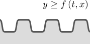
変形する床の例として、2次元平面において、右図のように以下のような拘束条件をとる（2次元にしたのは単に式を見やすくするため）：
𝐺(𝑡,𝒙)≡𝑦−𝑓(𝑡,𝑥)≥0𝑓(𝑡,𝑥)=𝐴⋅sin𝐵𝑡⋅tanh(𝐶sin𝐷𝑥)
tanh
は双曲線関数である（以下の【5.3-注1】）。
𝑦=𝑓(𝑡,𝑥)
のグラフが壁の境界になっている。このグラフはのこぎり状の形状であり、定数
𝐴,𝐵,𝐶,𝐷
は、大きくなるにつれて、それぞれ
𝐴
：階段の高低差が大きくなり、
𝐵
：振動が速くなり、
𝐶
：歯が角ばっていき、
𝐷
：階段の横幅が小さくなる。
弾性衝突公式の計算
微分
𝜕𝑡𝐺,∇𝐺
は、以下のようになる：
𝜕𝑡𝐺=−𝐴𝐵⋅cos𝐵𝑡⋅tanh(𝐶sin𝐷𝑥)∇𝐺=⎡⎢
⎢⎣−𝐴𝐶𝐷sin𝐵𝑡⋅cos𝐷𝑥cosh2(𝐶sin𝐷𝑥)1⎤⎥
⎥⎦
これらを式(13)に代入すれば、衝突後の速度
˙𝒙out
を与える式が求まる。特にきれいな式になるわけでもないので、代入した結果は省略する。（数値計算を行う場合、代入処理はプログラム中で行えばよいので、そもそも書き下す必要はない。）
シミュレーション
数値計算を行うと右図のようになる（図は3次元の場合）。
【5.3-注1】双曲線関数
双曲線関数について、必要な式をまとめておく：
cosh𝑥=𝑒𝑥+𝑒−𝑥2sinh𝑥=𝑒𝑥−𝑒−𝑥2tanh𝑥=sinh𝑥cosh𝑥=𝑒𝑥−𝑒−𝑥𝑒𝑥+𝑒−𝑥𝑑𝑑𝑥tanh𝑥=1cosh2𝑥